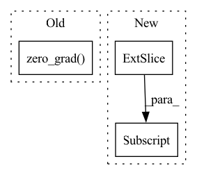

Pattern ID :28242
Before Change
// prepare lstm to receive gradient from all losses (Q1_loss, Q2_loss, policy_loss)
// retain_graph needs to be used because lstm is shared among the three
self.lstm_optimizer.zero_grad()
// reduce td error
self.Q1_optimizer.zero_grad()After Change
self.critic_lstm.flatten_parameters()
critic_h, _ = self.actor_lstm(b.o)
critic_h_1_T, critic_h_2_Tplus1 = critic_h[:, :-1, :], critic_h[:, 1:, :] // T represents num_bptt
// prepare lstm to receive gradient from all losses (Q1_loss, Q2_loss, policy_loss)
// retain_graph needs to be used because lstm is shared among the threeIn pattern: SUPERPATTERN
Frequency: 3
Non-data size: 3
Instances Fragment ID: 83408776
Project Name: zhihanyang2022/off-policy-continuous-control
Commit Name: 0d405a315e44a0b8df2bfcb89ea02b6979215166
Time: 2021-05-23
Author: yangz2@carleton.edu
File Name: offpcc/algorithms/sac_lstm.py
M Class Name: SAC_LSTM
N Class Name: SAC_LSTM
M Method Name: update_networks(2)
N Method Name: update_networks(2)
M Parent Class: OffPolicyRLAlgorithm
N Parent Class: OffPolicyRLAlgorithm
M File Name: offpcc/algorithms/sac_lstm.py
N File Name: offpcc/algorithms/sac_lstm.py
M Start Line: 128
M End Line: 221
N Start Line: 130
N End Line: 229
Before Change
hh_list.append(hh)
preds = torch.stack(output_list, dim=1)
loss = criterion(preds, targets)
optimizer.zero_grad()
loss.backward()
optimizer.step()
p_bar.set_description(f"Loss: {loss.item():.4f}")
return torch.squeeze(preds)After Change
grad_outputs = torch.eye(out.shape[-1], device=targets.device)
for g_idx in range(grad_outputs.shape[0]):
param.grad.zero_()
instantaneous_eligibility_trace[g_idx] = torch.autograd.grad(out[:, g_idx] , param, retain_graph=True)[0][g_idx]
eligibility_trace.append(instantaneous_eligibility_trace)
preds = torch.stack(output_list, dim=1)
mean_error = targets - preds Fragment ID: 83408770
Project Name: neurotorch/neurotorch
Commit Name: 4028f8f7fcb44b43d6235c1d12c734f809b1e629
Time: 2022-11-28
Author: 50332514+JeremieGince@users.noreply.github.com
File Name: src/neurotorch/learning_algorithms/debug_e_prop.py
M Class Name: AnonimousClass
N Class Name: AnonimousClass
M Method Name: dummy_train(1)
N Method Name: dummy_train(1)
M Parent Class:
N Parent Class:
M File Name: src/neurotorch/learning_algorithms/debug_e_prop.py
N File Name: src/neurotorch/learning_algorithms/debug_e_prop.py
M Start Line: 51
M End Line: 64
N Start Line: 45
N End Line: 76
Before Change
// Computing gradients for fnet and updating weights
fnet_loss = FLAGS.warp_scaling * warp_loss + fnet_loss.detach()
fnet_loss = fnet_loss.cuda()
fnet_optimizer.zero_grad()
fnet_loss.backward()
fnet_optimizer.step()
update_list_avg += [tb, dt_ratio]
update_list_name += ["t_balance", "Dst_ratio"]After Change
// Preparing generator input
gen_flow = upscale_four(fnet_input * 4.)
gen_flow = torch.reshape(gen_flow[:, 0:2] ,
(FLAGS.batch_size, (inputimages - 1), 2, FLAGS.crop_size * 4, FLAGS.crop_size * 4))
input_frames = torch.reshape(Frame_t,
(FLAGS.batch_size * (inputimages - 1), output_channel, FLAGS.crop_size, Fragment ID: 83408772
Project Name: dwightfoster/pytorch-tecogan
Commit Name: b64afd58ac37b8b9ed21dc91b415612572cfa585
Time: 2021-03-11
Author: dwightfoster03@gmail.com
File Name: code/train.py
M Class Name: AnonimousClass
N Class Name: AnonimousClass
M Method Name: TecoGAN(11)
N Method Name: TecoGAN(13)
M Parent Class:
N Parent Class:
M File Name: code/train.py
N File Name: code/train.py
M Start Line: 47
M End Line: 347
N Start Line: 66
N End Line: 145